Controls : Literally just left mouse click.
Probably still has bugs but ive fixed all the ones ive found.
Game should work on mobile but not designed for it.
If you switch tabs the game might break lol.
:) have fun.
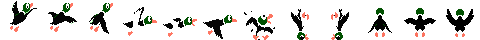
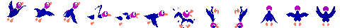
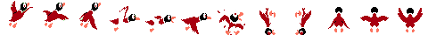
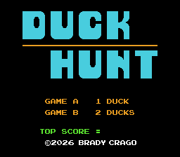
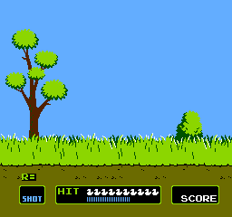
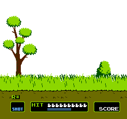
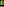
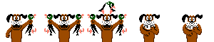
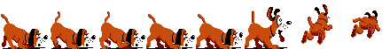
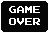
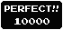
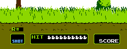